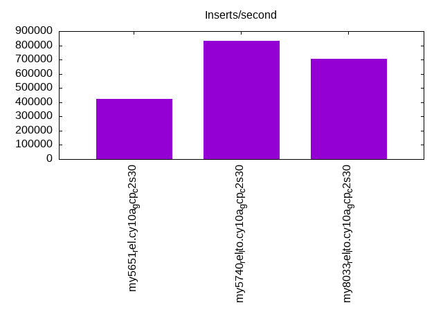
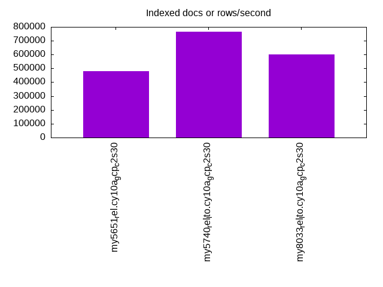
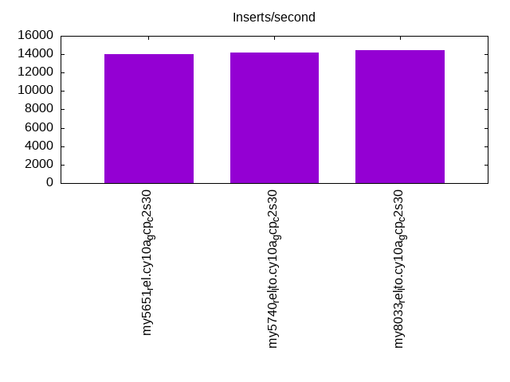
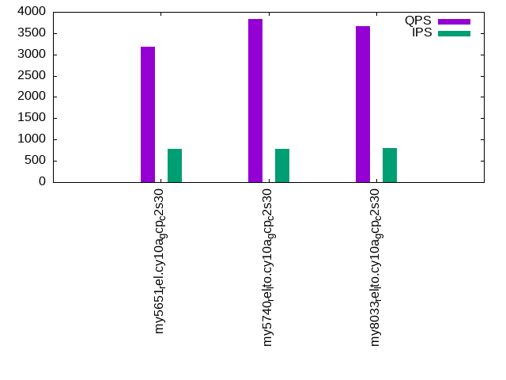
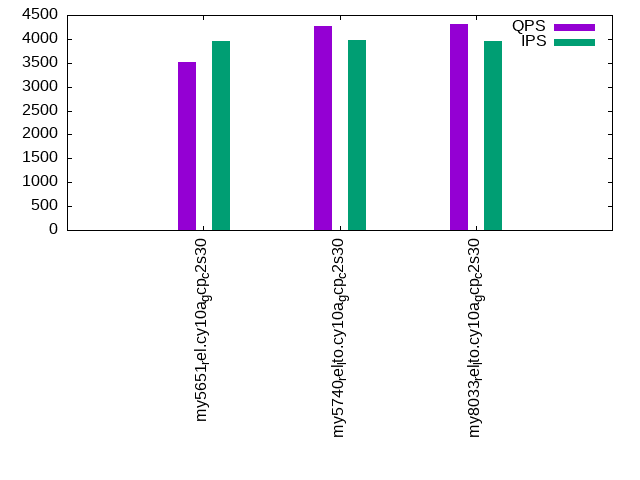
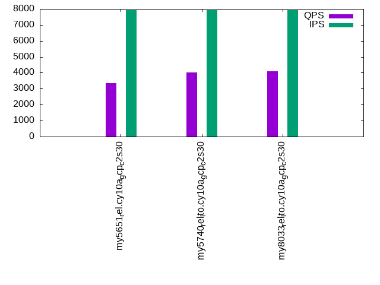

This is a report for the insert benchmark with 4000M docs and 8 client(s). It is generated by scripts (bash, awk, sed) and Tufte might not be impressed. An overview of the insert benchmark is here and a short update is here. Below, by DBMS, I mean DBMS+version.config. An example is my8020.c10b40 where my means MySQL, 8020 is version 8.0.20 and c10b40 is the name for the configuration file.
The test server is a c2-standard-30 from GCP with 15 cores, hyperthreads disabled, 120G RAM, XFS + SW RAID 0 on 4 NVMe devices (1.5TB). The benchmark was run with 8 client and there were 1 or 3 connections per client (1 for queries or inserts without rate limits, 1+1 for rate limited inserts+deletes). There are 8 tables, client per table. It loads 4000M rows without secondary indexes, creates secondary indexes, then inserts 80M rows with a delete per insert to avoid growing the table. It then does 3 read+write tests for 1800s each that do queries as fast as possible with 100, 500 and then 1000 inserts/second/client concurrent with the queries and 1000 deletes/second to avoid growing the table. The database is larger than memory.
The tested DBMS are:
The numbers are inserts/s for l.i0 and l.i1, indexed docs (or rows) /s for l.x and queries/s for q*.2. The values are the average rate over the entire test for inserts (IPS) and queries (QPS). The range of values for IPS and QPS is split into 3 parts: bottom 25%, middle 50%, top 25%. Values in the bottom 25% have a red background, values in the top 25% have a green background and values in the middle have no color. A gray background is used for values that can be ignored because the DBMS did not sustain the target insert rate. Red backgrounds are not used when the minimum value is within 80% of the max value.
| dbms | l.i0 | l.x | l.i1 | q100.1 | q500.1 | q1000.1 |
|---|---|---|---|---|---|---|
| my5651_rel.cy10a_gcp_c2s30 | 424133 | 478195 | 14035 | 3183 | 3513 | 3362 |
| my5740_rel_lto.cy10a_gcp_c2s30 | 833854 | 764253 | 14167 | 3835 | 4268 | 4019 |
| my8033_rel_lto.cy10a_gcp_c2s30 | 706964 | 603060 | 14409 | 3665 | 4303 | 4103 |
This table has relative throughput, throughput for the DBMS relative to the DBMS in the first line, using the absolute throughput from the previous table. Values less than 0.95 have a yellow background. Values greater than 1.05 have a blue background.
| dbms | l.i0 | l.x | l.i1 | q100.1 | q500.1 | q1000.1 |
|---|---|---|---|---|---|---|
| my5651_rel.cy10a_gcp_c2s30 | 1.00 | 1.00 | 1.00 | 1.00 | 1.00 | 1.00 |
| my5740_rel_lto.cy10a_gcp_c2s30 | 1.97 | 1.60 | 1.01 | 1.20 | 1.21 | 1.20 |
| my8033_rel_lto.cy10a_gcp_c2s30 | 1.67 | 1.26 | 1.03 | 1.15 | 1.22 | 1.22 |
This lists the average rate of inserts/s for the tests that do inserts concurrent with queries. For such tests the query rate is listed in the table above. The read+write tests are setup so that the insert rate should match the target rate every second. Cells that are not at least 95% of the target have a red background to indicate a failure to satisfy the target.
| dbms | q100.1 | q500.1 | q1000.1 |
|---|---|---|---|
| my5651_rel.cy10a_gcp_c2s30 | 789 | 3965 | 7930 |
| my5740_rel_lto.cy10a_gcp_c2s30 | 789 | 3969 | 7943 |
| my8033_rel_lto.cy10a_gcp_c2s30 | 792 | 3958 | 7908 |
| target | 800 | 4000 | 8000 |
l.i0: load without secondary indexes. Graphs for performance per 1-second interval are here.
Average throughput:
Insert response time histogram: each cell has the percentage of responses that take <= the time in the header and max is the max response time in seconds. For the max column values in the top 25% of the range have a red background and in the bottom 25% of the range have a green background. The red background is not used when the min value is within 80% of the max value.
| dbms | 256us | 1ms | 4ms | 16ms | 64ms | 256ms | 1s | 4s | 16s | gt | max |
|---|---|---|---|---|---|---|---|---|---|---|---|
| my5651_rel.cy10a_gcp_c2s30 | 0.158 | 99.517 | 0.141 | 0.169 | 0.014 | nonzero | nonzero | nonzero | 5.979 | ||
| my5740_rel_lto.cy10a_gcp_c2s30 | 94.985 | 4.937 | 0.046 | 0.016 | 0.015 | 0.001 | nonzero | 1.626 | |||
| my8033_rel_lto.cy10a_gcp_c2s30 | 9.653 | 90.247 | 0.066 | 0.019 | 0.014 | 0.001 | 0.400 |
Performance metrics for the DBMS listed above. Some are normalized by throughput, others are not. Legend for results is here.
ips qps rps rmbps wps wmbps rpq rkbpq wpi wkbpi csps cpups cspq cpupq dbgb1 dbgb2 rss maxop p50 p99 tag 424133 0 3330 13.0 2021.6 119.1 0.008 0.031 0.005 0.287 89571 42.6 0.211 15 263.1 391.6 85.7 5.979 54141 13898 4000m.my5651_rel.cy10a_gcp_c2s30 833854 0 0 0.0 4013.5 233.9 0.000 0.000 0.005 0.287 85613 73.2 0.103 13 263.1 391.6 86.8 1.626 107384 82111 4000m.my5740_rel_lto.cy10a_gcp_c2s30 706964 0 0 0.0 3705.8 202.7 0.000 0.000 0.005 0.294 172612 76.8 0.244 16 262.1 390.7 86.9 0.400 90802 69625 4000m.my8033_rel_lto.cy10a_gcp_c2s30
l.x: create secondary indexes.
Average throughput:
Performance metrics for the DBMS listed above. Some are normalized by throughput, others are not. Legend for results is here.
ips qps rps rmbps wps wmbps rpq rkbpq wpi wkbpi csps cpups cspq cpupq dbgb1 dbgb2 rss maxop p50 p99 tag 478195 0 2714 349.3 5299.5 594.0 0.006 0.748 0.011 1.272 14859 33.0 0.031 10 542.2 670.7 85.7 0.002 NA NA 4000m.my5651_rel.cy10a_gcp_c2s30 764253 0 4027 672.1 7717.6 864.1 0.005 0.900 0.010 1.158 27488 29.5 0.036 6 588.3 716.8 87.3 0.033 NA NA 4000m.my5740_rel_lto.cy10a_gcp_c2s30 603060 0 7642 649.2 12691.7 773.2 0.013 1.102 0.021 1.313 55738 57.3 0.092 14 586.1 714.7 86.9 0.004 NA NA 4000m.my8033_rel_lto.cy10a_gcp_c2s30
l.i1: continue load after secondary indexes created. Graphs for performance per 1-second interval are here.
Average throughput:
Insert response time histogram: each cell has the percentage of responses that take <= the time in the header and max is the max response time in seconds. For the max column values in the top 25% of the range have a red background and in the bottom 25% of the range have a green background. The red background is not used when the min value is within 80% of the max value.
| dbms | 256us | 1ms | 4ms | 16ms | 64ms | 256ms | 1s | 4s | 16s | gt | max |
|---|---|---|---|---|---|---|---|---|---|---|---|
| my5651_rel.cy10a_gcp_c2s30 | 0.904 | 59.370 | 28.048 | 11.558 | 0.119 | 0.001 | nonzero | 4.794 | |||
| my5740_rel_lto.cy10a_gcp_c2s30 | 2.418 | 58.267 | 27.289 | 11.991 | 0.035 | 0.337 | |||||
| my8033_rel_lto.cy10a_gcp_c2s30 | 0.284 | 58.228 | 30.087 | 11.341 | 0.059 | 0.001 | 1.173 |
Delete response time histogram: each cell has the percentage of responses that take <= the time in the header and max is the max response time in seconds. For the max column values in the top 25% of the range have a red background and in the bottom 25% of the range have a green background. The red background is not used when the min value is within 80% of the max value.
| dbms | 256us | 1ms | 4ms | 16ms | 64ms | 256ms | 1s | 4s | 16s | gt | max |
|---|---|---|---|---|---|---|---|---|---|---|---|
| my5651_rel.cy10a_gcp_c2s30 | 6.144 | 81.264 | 12.463 | 0.127 | 0.001 | 0.001 | nonzero | 4.080 | |||
| my5740_rel_lto.cy10a_gcp_c2s30 | 29.605 | 66.350 | 3.903 | 0.143 | 0.179 | ||||||
| my8033_rel_lto.cy10a_gcp_c2s30 | 20.029 | 75.873 | 3.865 | 0.232 | nonzero | 0.328 |
Performance metrics for the DBMS listed above. Some are normalized by throughput, others are not. Legend for results is here.
ips qps rps rmbps wps wmbps rpq rkbpq wpi wkbpi csps cpups cspq cpupq dbgb1 dbgb2 rss maxop p50 p99 tag 14035 0 14160 215.8 26901.3 679.9 1.009 15.748 1.917 49.606 110393 23.9 7.866 255 812.6 979.6 85.7 4.794 849 250 4000m.my5651_rel.cy10a_gcp_c2s30 14167 0 15840 247.5 31321.4 730.8 1.118 17.889 2.211 52.821 129654 28.2 9.152 299 812.3 979.0 87.1 0.337 749 250 4000m.my5740_rel_lto.cy10a_gcp_c2s30 14409 0 17044 266.3 34543.3 775.6 1.183 18.926 2.397 55.118 175995 37.2 12.214 387 809.0 975.5 86.9 1.173 999 250 4000m.my8033_rel_lto.cy10a_gcp_c2s30
q100.1: range queries with 100 insert/s per client. Graphs for performance per 1-second interval are here.
Average throughput:
Query response time histogram: each cell has the percentage of responses that take <= the time in the header and max is the max response time in seconds. For max values in the top 25% of the range have a red background and in the bottom 25% of the range have a green background. The red background is not used when the min value is within 80% of the max value.
| dbms | 256us | 1ms | 4ms | 16ms | 64ms | 256ms | 1s | 4s | 16s | gt | max |
|---|---|---|---|---|---|---|---|---|---|---|---|
| my5651_rel.cy10a_gcp_c2s30 | 37.880 | 3.009 | 35.165 | 23.892 | 0.053 | nonzero | 0.082 | ||||
| my5740_rel_lto.cy10a_gcp_c2s30 | 38.995 | 2.272 | 46.436 | 12.267 | 0.030 | nonzero | 0.074 | ||||
| my8033_rel_lto.cy10a_gcp_c2s30 | 33.094 | 6.511 | 48.426 | 11.633 | 0.331 | 0.006 | nonzero | 0.256 |
Insert response time histogram: each cell has the percentage of responses that take <= the time in the header and max is the max response time in seconds. For max values in the top 25% of the range have a red background and in the bottom 25% of the range have a green background. The red background is not used when the min value is within 80% of the max value.
| dbms | 256us | 1ms | 4ms | 16ms | 64ms | 256ms | 1s | 4s | 16s | gt | max |
|---|---|---|---|---|---|---|---|---|---|---|---|
| my5651_rel.cy10a_gcp_c2s30 | 18.715 | 74.146 | 7.139 | 0.058 | |||||||
| my5740_rel_lto.cy10a_gcp_c2s30 | 27.243 | 71.983 | 0.771 | 0.003 | 0.072 | ||||||
| my8033_rel_lto.cy10a_gcp_c2s30 | 9.101 | 83.910 | 6.306 | 0.670 | 0.014 | 0.419 |
Delete response time histogram: each cell has the percentage of responses that take <= the time in the header and max is the max response time in seconds. For max values in the top 25% of the range have a red background and in the bottom 25% of the range have a green background. The red background is not used when the min value is within 80% of the max value.
| dbms | 256us | 1ms | 4ms | 16ms | 64ms | 256ms | 1s | 4s | 16s | gt | max |
|---|---|---|---|---|---|---|---|---|---|---|---|
| my5651_rel.cy10a_gcp_c2s30 | 20.562 | 72.771 | 6.667 | 0.054 | |||||||
| my5740_rel_lto.cy10a_gcp_c2s30 | 37.878 | 61.493 | 0.625 | 0.003 | 0.072 | ||||||
| my8033_rel_lto.cy10a_gcp_c2s30 | 17.757 | 76.295 | 5.337 | 0.594 | 0.017 | 0.419 |
Performance metrics for the DBMS listed above. Some are normalized by throughput, others are not. Legend for results is here.
ips qps rps rmbps wps wmbps rpq rkbpq wpi wkbpi csps cpups cspq cpupq dbgb1 dbgb2 rss maxop p50 p99 tag 789 3183 24350 380.1 20926.0 432.5 7.650 122.296 26.522 561.291 106329 17.7 33.406 834 812.6 979.6 85.7 0.082 416 208 4000m.my5651_rel.cy10a_gcp_c2s30 789 3835 30976 484.0 22554.2 551.0 8.076 129.221 28.571 714.715 130370 20.0 33.991 782 812.3 979.0 87.0 0.074 511 224 4000m.my5740_rel_lto.cy10a_gcp_c2s30 792 3665 30582 477.8 24325.8 544.8 8.343 133.495 30.714 704.402 158387 24.1 43.211 986 809.0 975.5 86.9 0.256 495 112 4000m.my8033_rel_lto.cy10a_gcp_c2s30
q500.1: range queries with 500 insert/s per client. Graphs for performance per 1-second interval are here.
Average throughput:
Query response time histogram: each cell has the percentage of responses that take <= the time in the header and max is the max response time in seconds. For max values in the top 25% of the range have a red background and in the bottom 25% of the range have a green background. The red background is not used when the min value is within 80% of the max value.
| dbms | 256us | 1ms | 4ms | 16ms | 64ms | 256ms | 1s | 4s | 16s | gt | max |
|---|---|---|---|---|---|---|---|---|---|---|---|
| my5651_rel.cy10a_gcp_c2s30 | 38.305 | 3.475 | 38.797 | 19.398 | 0.024 | nonzero | 0.079 | ||||
| my5740_rel_lto.cy10a_gcp_c2s30 | 39.177 | 2.650 | 50.461 | 7.704 | 0.007 | nonzero | 0.066 | ||||
| my8033_rel_lto.cy10a_gcp_c2s30 | 36.753 | 5.215 | 51.309 | 6.640 | 0.083 | nonzero | 0.099 |
Insert response time histogram: each cell has the percentage of responses that take <= the time in the header and max is the max response time in seconds. For max values in the top 25% of the range have a red background and in the bottom 25% of the range have a green background. The red background is not used when the min value is within 80% of the max value.
| dbms | 256us | 1ms | 4ms | 16ms | 64ms | 256ms | 1s | 4s | 16s | gt | max |
|---|---|---|---|---|---|---|---|---|---|---|---|
| my5651_rel.cy10a_gcp_c2s30 | 41.917 | 55.125 | 2.958 | 0.061 | |||||||
| my5740_rel_lto.cy10a_gcp_c2s30 | 47.357 | 52.433 | 0.210 | 0.033 | |||||||
| my8033_rel_lto.cy10a_gcp_c2s30 | 30.751 | 68.299 | 0.934 | 0.017 | 0.139 |
Delete response time histogram: each cell has the percentage of responses that take <= the time in the header and max is the max response time in seconds. For max values in the top 25% of the range have a red background and in the bottom 25% of the range have a green background. The red background is not used when the min value is within 80% of the max value.
| dbms | 256us | 1ms | 4ms | 16ms | 64ms | 256ms | 1s | 4s | 16s | gt | max |
|---|---|---|---|---|---|---|---|---|---|---|---|
| my5651_rel.cy10a_gcp_c2s30 | 49.202 | 48.400 | 2.398 | 0.062 | |||||||
| my5740_rel_lto.cy10a_gcp_c2s30 | 70.837 | 29.073 | 0.090 | 0.034 | |||||||
| my8033_rel_lto.cy10a_gcp_c2s30 | 57.223 | 42.228 | 0.537 | 0.011 | 0.132 |
Performance metrics for the DBMS listed above. Some are normalized by throughput, others are not. Legend for results is here.
ips qps rps rmbps wps wmbps rpq rkbpq wpi wkbpi csps cpups cspq cpupq dbgb1 dbgb2 rss maxop p50 p99 tag 3965 3513 25385 395.1 17897.8 376.7 7.226 115.159 4.514 97.304 106839 20.1 30.412 858 812.6 979.6 85.7 0.079 448 384 4000m.my5651_rel.cy10a_gcp_c2s30 3969 4268 33534 524.0 20684.4 528.4 7.857 125.716 5.211 136.322 136167 21.9 31.905 770 812.3 979.0 86.9 0.066 543 479 4000m.my5740_rel_lto.cy10a_gcp_c2s30 3958 4303 34140 533.4 24469.5 553.1 7.935 126.954 6.182 143.085 167528 25.7 38.936 896 809.0 975.7 86.9 0.099 543 176 4000m.my8033_rel_lto.cy10a_gcp_c2s30
q1000.1: range queries with 1000 insert/s per client. Graphs for performance per 1-second interval are here.
Average throughput:
Query response time histogram: each cell has the percentage of responses that take <= the time in the header and max is the max response time in seconds. For max values in the top 25% of the range have a red background and in the bottom 25% of the range have a green background. The red background is not used when the min value is within 80% of the max value.
| dbms | 256us | 1ms | 4ms | 16ms | 64ms | 256ms | 1s | 4s | 16s | gt | max |
|---|---|---|---|---|---|---|---|---|---|---|---|
| my5651_rel.cy10a_gcp_c2s30 | 37.854 | 3.013 | 37.892 | 21.192 | 0.049 | 0.001 | 0.098 | ||||
| my5740_rel_lto.cy10a_gcp_c2s30 | 38.713 | 2.527 | 48.355 | 10.389 | 0.016 | 0.063 | |||||
| my8033_rel_lto.cy10a_gcp_c2s30 | 35.539 | 5.793 | 50.047 | 8.574 | 0.037 | 0.008 | 0.001 | 0.740 |
Insert response time histogram: each cell has the percentage of responses that take <= the time in the header and max is the max response time in seconds. For max values in the top 25% of the range have a red background and in the bottom 25% of the range have a green background. The red background is not used when the min value is within 80% of the max value.
| dbms | 256us | 1ms | 4ms | 16ms | 64ms | 256ms | 1s | 4s | 16s | gt | max |
|---|---|---|---|---|---|---|---|---|---|---|---|
| my5651_rel.cy10a_gcp_c2s30 | 31.002 | 64.813 | 4.183 | 0.002 | nonzero | 0.299 | |||||
| my5740_rel_lto.cy10a_gcp_c2s30 | 46.219 | 53.477 | 0.304 | 0.049 | |||||||
| my8033_rel_lto.cy10a_gcp_c2s30 | 29.947 | 69.198 | 0.637 | 0.174 | 0.044 | 0.885 |
Delete response time histogram: each cell has the percentage of responses that take <= the time in the header and max is the max response time in seconds. For max values in the top 25% of the range have a red background and in the bottom 25% of the range have a green background. The red background is not used when the min value is within 80% of the max value.
| dbms | 256us | 1ms | 4ms | 16ms | 64ms | 256ms | 1s | 4s | 16s | gt | max |
|---|---|---|---|---|---|---|---|---|---|---|---|
| my5651_rel.cy10a_gcp_c2s30 | 36.843 | 59.622 | 3.531 | 0.003 | nonzero | 0.333 | |||||
| my5740_rel_lto.cy10a_gcp_c2s30 | 67.314 | 32.538 | 0.148 | nonzero | 0.073 | ||||||
| my8033_rel_lto.cy10a_gcp_c2s30 | 54.875 | 44.455 | 0.493 | 0.138 | 0.040 | 0.732 |
Performance metrics for the DBMS listed above. Some are normalized by throughput, others are not. Legend for results is here.
ips qps rps rmbps wps wmbps rpq rkbpq wpi wkbpi csps cpups cspq cpupq dbgb1 dbgb2 rss maxop p50 p99 tag 7930 3362 24500 379.8 20512.3 424.5 7.288 115.676 2.587 54.817 115497 22.6 34.356 1008 812.9 980.5 85.7 0.098 432 368 4000m.my5651_rel.cy10a_gcp_c2s30 7943 4019 31423 491.0 22910.8 558.9 7.818 125.090 2.885 72.054 138359 25.1 34.424 937 812.3 979.1 86.9 0.063 511 448 4000m.my5740_rel_lto.cy10a_gcp_c2s30 7908 4103 32433 506.8 26669.8 584.5 7.904 126.464 3.373 75.694 170991 29.7 41.671 1086 809.0 976.5 86.9 0.740 512 96 4000m.my8033_rel_lto.cy10a_gcp_c2s30
l.i0: load without secondary indexes
Performance metrics for all DBMS, not just the ones listed above. Some are normalized by throughput, others are not. Legend for results is here.
ips qps rps rmbps wps wmbps rpq rkbpq wpi wkbpi csps cpups cspq cpupq dbgb1 dbgb2 rss maxop p50 p99 tag 424133 0 3330 13.0 2021.6 119.1 0.008 0.031 0.005 0.287 89571 42.6 0.211 15 263.1 391.6 85.7 5.979 54141 13898 4000m.my5651_rel.cy10a_gcp_c2s30 833854 0 0 0.0 4013.5 233.9 0.000 0.000 0.005 0.287 85613 73.2 0.103 13 263.1 391.6 86.8 1.626 107384 82111 4000m.my5740_rel_lto.cy10a_gcp_c2s30 706964 0 0 0.0 3705.8 202.7 0.000 0.000 0.005 0.294 172612 76.8 0.244 16 262.1 390.7 86.9 0.400 90802 69625 4000m.my8033_rel_lto.cy10a_gcp_c2s30
l.x: create secondary indexes
Performance metrics for all DBMS, not just the ones listed above. Some are normalized by throughput, others are not. Legend for results is here.
ips qps rps rmbps wps wmbps rpq rkbpq wpi wkbpi csps cpups cspq cpupq dbgb1 dbgb2 rss maxop p50 p99 tag 478195 0 2714 349.3 5299.5 594.0 0.006 0.748 0.011 1.272 14859 33.0 0.031 10 542.2 670.7 85.7 0.002 NA NA 4000m.my5651_rel.cy10a_gcp_c2s30 764253 0 4027 672.1 7717.6 864.1 0.005 0.900 0.010 1.158 27488 29.5 0.036 6 588.3 716.8 87.3 0.033 NA NA 4000m.my5740_rel_lto.cy10a_gcp_c2s30 603060 0 7642 649.2 12691.7 773.2 0.013 1.102 0.021 1.313 55738 57.3 0.092 14 586.1 714.7 86.9 0.004 NA NA 4000m.my8033_rel_lto.cy10a_gcp_c2s30
l.i1: continue load after secondary indexes created
Performance metrics for all DBMS, not just the ones listed above. Some are normalized by throughput, others are not. Legend for results is here.
ips qps rps rmbps wps wmbps rpq rkbpq wpi wkbpi csps cpups cspq cpupq dbgb1 dbgb2 rss maxop p50 p99 tag 14035 0 14160 215.8 26901.3 679.9 1.009 15.748 1.917 49.606 110393 23.9 7.866 255 812.6 979.6 85.7 4.794 849 250 4000m.my5651_rel.cy10a_gcp_c2s30 14167 0 15840 247.5 31321.4 730.8 1.118 17.889 2.211 52.821 129654 28.2 9.152 299 812.3 979.0 87.1 0.337 749 250 4000m.my5740_rel_lto.cy10a_gcp_c2s30 14409 0 17044 266.3 34543.3 775.6 1.183 18.926 2.397 55.118 175995 37.2 12.214 387 809.0 975.5 86.9 1.173 999 250 4000m.my8033_rel_lto.cy10a_gcp_c2s30
q100.1: range queries with 100 insert/s per client
Performance metrics for all DBMS, not just the ones listed above. Some are normalized by throughput, others are not. Legend for results is here.
ips qps rps rmbps wps wmbps rpq rkbpq wpi wkbpi csps cpups cspq cpupq dbgb1 dbgb2 rss maxop p50 p99 tag 789 3183 24350 380.1 20926.0 432.5 7.650 122.296 26.522 561.291 106329 17.7 33.406 834 812.6 979.6 85.7 0.082 416 208 4000m.my5651_rel.cy10a_gcp_c2s30 789 3835 30976 484.0 22554.2 551.0 8.076 129.221 28.571 714.715 130370 20.0 33.991 782 812.3 979.0 87.0 0.074 511 224 4000m.my5740_rel_lto.cy10a_gcp_c2s30 792 3665 30582 477.8 24325.8 544.8 8.343 133.495 30.714 704.402 158387 24.1 43.211 986 809.0 975.5 86.9 0.256 495 112 4000m.my8033_rel_lto.cy10a_gcp_c2s30
q500.1: range queries with 500 insert/s per client
Performance metrics for all DBMS, not just the ones listed above. Some are normalized by throughput, others are not. Legend for results is here.
ips qps rps rmbps wps wmbps rpq rkbpq wpi wkbpi csps cpups cspq cpupq dbgb1 dbgb2 rss maxop p50 p99 tag 3965 3513 25385 395.1 17897.8 376.7 7.226 115.159 4.514 97.304 106839 20.1 30.412 858 812.6 979.6 85.7 0.079 448 384 4000m.my5651_rel.cy10a_gcp_c2s30 3969 4268 33534 524.0 20684.4 528.4 7.857 125.716 5.211 136.322 136167 21.9 31.905 770 812.3 979.0 86.9 0.066 543 479 4000m.my5740_rel_lto.cy10a_gcp_c2s30 3958 4303 34140 533.4 24469.5 553.1 7.935 126.954 6.182 143.085 167528 25.7 38.936 896 809.0 975.7 86.9 0.099 543 176 4000m.my8033_rel_lto.cy10a_gcp_c2s30
q1000.1: range queries with 1000 insert/s per client
Performance metrics for all DBMS, not just the ones listed above. Some are normalized by throughput, others are not. Legend for results is here.
ips qps rps rmbps wps wmbps rpq rkbpq wpi wkbpi csps cpups cspq cpupq dbgb1 dbgb2 rss maxop p50 p99 tag 7930 3362 24500 379.8 20512.3 424.5 7.288 115.676 2.587 54.817 115497 22.6 34.356 1008 812.9 980.5 85.7 0.098 432 368 4000m.my5651_rel.cy10a_gcp_c2s30 7943 4019 31423 491.0 22910.8 558.9 7.818 125.090 2.885 72.054 138359 25.1 34.424 937 812.3 979.1 86.9 0.063 511 448 4000m.my5740_rel_lto.cy10a_gcp_c2s30 7908 4103 32433 506.8 26669.8 584.5 7.904 126.464 3.373 75.694 170991 29.7 41.671 1086 809.0 976.5 86.9 0.740 512 96 4000m.my8033_rel_lto.cy10a_gcp_c2s30
Insert response time histogram
256us 1ms 4ms 16ms 64ms 256ms 1s 4s 16s gt max tag 0.000 0.158 99.517 0.141 0.169 0.014 nonzero nonzero nonzero 0.000 5.979 my5651_rel.cy10a_gcp_c2s30 0.000 94.985 4.937 0.046 0.016 0.015 0.001 nonzero 0.000 0.000 1.626 my5740_rel_lto.cy10a_gcp_c2s30 0.000 9.653 90.247 0.066 0.019 0.014 0.001 0.000 0.000 0.000 0.400 my8033_rel_lto.cy10a_gcp_c2s30
TODO - determine whether there is data for create index response time
Insert response time histogram
256us 1ms 4ms 16ms 64ms 256ms 1s 4s 16s gt max tag 0.000 0.000 0.904 59.370 28.048 11.558 0.119 0.001 nonzero 0.000 4.794 my5651_rel.cy10a_gcp_c2s30 0.000 0.000 2.418 58.267 27.289 11.991 0.035 0.000 0.000 0.000 0.337 my5740_rel_lto.cy10a_gcp_c2s30 0.000 0.000 0.284 58.228 30.087 11.341 0.059 0.001 0.000 0.000 1.173 my8033_rel_lto.cy10a_gcp_c2s30
Delete response time histogram
256us 1ms 4ms 16ms 64ms 256ms 1s 4s 16s gt max tag 0.000 0.000 6.144 81.264 12.463 0.127 0.001 0.001 nonzero 0.000 4.080 my5651_rel.cy10a_gcp_c2s30 0.000 0.000 29.605 66.350 3.903 0.143 0.000 0.000 0.000 0.000 0.179 my5740_rel_lto.cy10a_gcp_c2s30 0.000 0.000 20.029 75.873 3.865 0.232 nonzero 0.000 0.000 0.000 0.328 my8033_rel_lto.cy10a_gcp_c2s30
Query response time histogram
256us 1ms 4ms 16ms 64ms 256ms 1s 4s 16s gt max tag 37.880 3.009 35.165 23.892 0.053 nonzero 0.000 0.000 0.000 0.000 0.082 my5651_rel.cy10a_gcp_c2s30 38.995 2.272 46.436 12.267 0.030 nonzero 0.000 0.000 0.000 0.000 0.074 my5740_rel_lto.cy10a_gcp_c2s30 33.094 6.511 48.426 11.633 0.331 0.006 nonzero 0.000 0.000 0.000 0.256 my8033_rel_lto.cy10a_gcp_c2s30
Insert response time histogram
256us 1ms 4ms 16ms 64ms 256ms 1s 4s 16s gt max tag 0.000 0.000 18.715 74.146 7.139 0.000 0.000 0.000 0.000 0.000 0.058 my5651_rel.cy10a_gcp_c2s30 0.000 0.000 27.243 71.983 0.771 0.003 0.000 0.000 0.000 0.000 0.072 my5740_rel_lto.cy10a_gcp_c2s30 0.000 0.000 9.101 83.910 6.306 0.670 0.014 0.000 0.000 0.000 0.419 my8033_rel_lto.cy10a_gcp_c2s30
Delete response time histogram
256us 1ms 4ms 16ms 64ms 256ms 1s 4s 16s gt max tag 0.000 0.000 20.562 72.771 6.667 0.000 0.000 0.000 0.000 0.000 0.054 my5651_rel.cy10a_gcp_c2s30 0.000 0.000 37.878 61.493 0.625 0.003 0.000 0.000 0.000 0.000 0.072 my5740_rel_lto.cy10a_gcp_c2s30 0.000 0.000 17.757 76.295 5.337 0.594 0.017 0.000 0.000 0.000 0.419 my8033_rel_lto.cy10a_gcp_c2s30
Query response time histogram
256us 1ms 4ms 16ms 64ms 256ms 1s 4s 16s gt max tag 38.305 3.475 38.797 19.398 0.024 nonzero 0.000 0.000 0.000 0.000 0.079 my5651_rel.cy10a_gcp_c2s30 39.177 2.650 50.461 7.704 0.007 nonzero 0.000 0.000 0.000 0.000 0.066 my5740_rel_lto.cy10a_gcp_c2s30 36.753 5.215 51.309 6.640 0.083 nonzero 0.000 0.000 0.000 0.000 0.099 my8033_rel_lto.cy10a_gcp_c2s30
Insert response time histogram
256us 1ms 4ms 16ms 64ms 256ms 1s 4s 16s gt max tag 0.000 0.000 41.917 55.125 2.958 0.000 0.000 0.000 0.000 0.000 0.061 my5651_rel.cy10a_gcp_c2s30 0.000 0.000 47.357 52.433 0.210 0.000 0.000 0.000 0.000 0.000 0.033 my5740_rel_lto.cy10a_gcp_c2s30 0.000 0.000 30.751 68.299 0.934 0.017 0.000 0.000 0.000 0.000 0.139 my8033_rel_lto.cy10a_gcp_c2s30
Delete response time histogram
256us 1ms 4ms 16ms 64ms 256ms 1s 4s 16s gt max tag 0.000 0.000 49.202 48.400 2.398 0.000 0.000 0.000 0.000 0.000 0.062 my5651_rel.cy10a_gcp_c2s30 0.000 0.000 70.837 29.073 0.090 0.000 0.000 0.000 0.000 0.000 0.034 my5740_rel_lto.cy10a_gcp_c2s30 0.000 0.000 57.223 42.228 0.537 0.011 0.000 0.000 0.000 0.000 0.132 my8033_rel_lto.cy10a_gcp_c2s30
Query response time histogram
256us 1ms 4ms 16ms 64ms 256ms 1s 4s 16s gt max tag 37.854 3.013 37.892 21.192 0.049 0.001 0.000 0.000 0.000 0.000 0.098 my5651_rel.cy10a_gcp_c2s30 38.713 2.527 48.355 10.389 0.016 0.000 0.000 0.000 0.000 0.000 0.063 my5740_rel_lto.cy10a_gcp_c2s30 35.539 5.793 50.047 8.574 0.037 0.008 0.001 0.000 0.000 0.000 0.740 my8033_rel_lto.cy10a_gcp_c2s30
Insert response time histogram
256us 1ms 4ms 16ms 64ms 256ms 1s 4s 16s gt max tag 0.000 0.000 31.002 64.813 4.183 0.002 nonzero 0.000 0.000 0.000 0.299 my5651_rel.cy10a_gcp_c2s30 0.000 0.000 46.219 53.477 0.304 0.000 0.000 0.000 0.000 0.000 0.049 my5740_rel_lto.cy10a_gcp_c2s30 0.000 0.000 29.947 69.198 0.637 0.174 0.044 0.000 0.000 0.000 0.885 my8033_rel_lto.cy10a_gcp_c2s30
Delete response time histogram
256us 1ms 4ms 16ms 64ms 256ms 1s 4s 16s gt max tag 0.000 0.000 36.843 59.622 3.531 0.003 nonzero 0.000 0.000 0.000 0.333 my5651_rel.cy10a_gcp_c2s30 0.000 0.000 67.314 32.538 0.148 nonzero 0.000 0.000 0.000 0.000 0.073 my5740_rel_lto.cy10a_gcp_c2s30 0.000 0.000 54.875 44.455 0.493 0.138 0.040 0.000 0.000 0.000 0.732 my8033_rel_lto.cy10a_gcp_c2s30